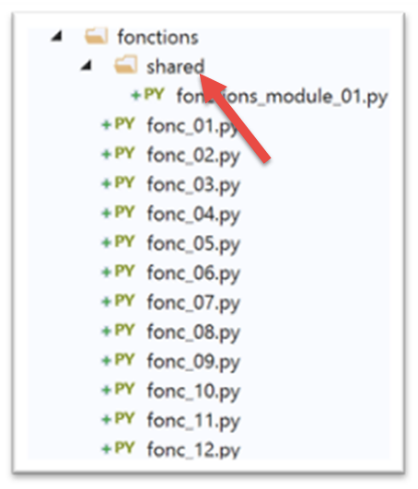
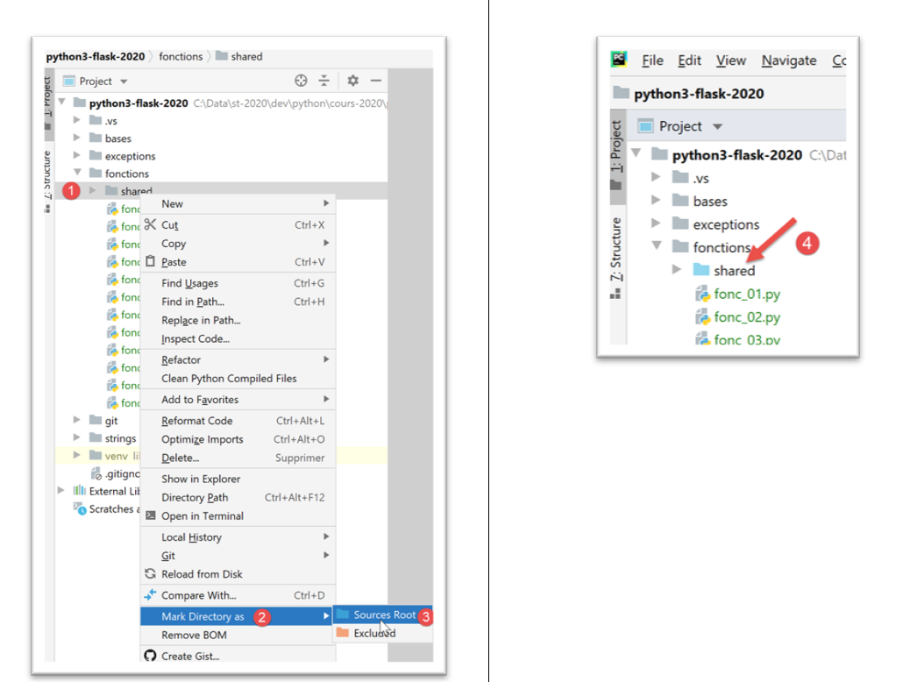
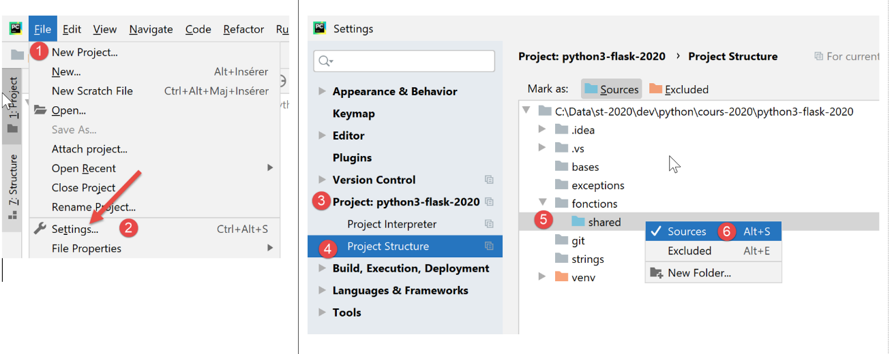
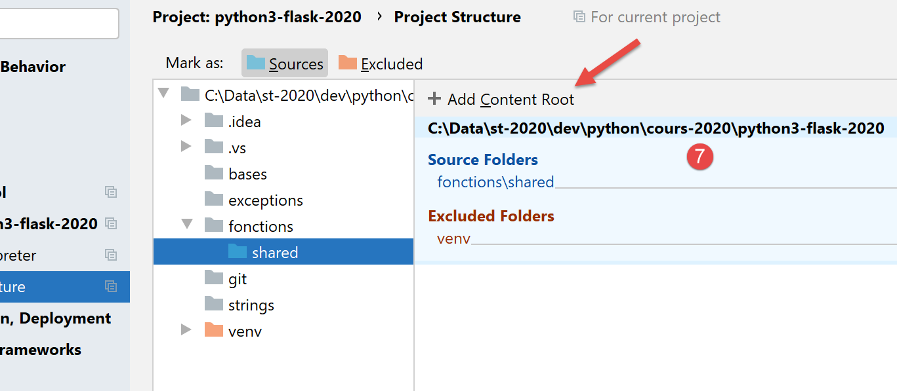
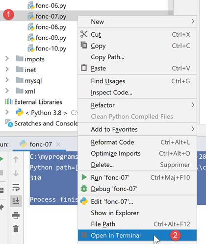
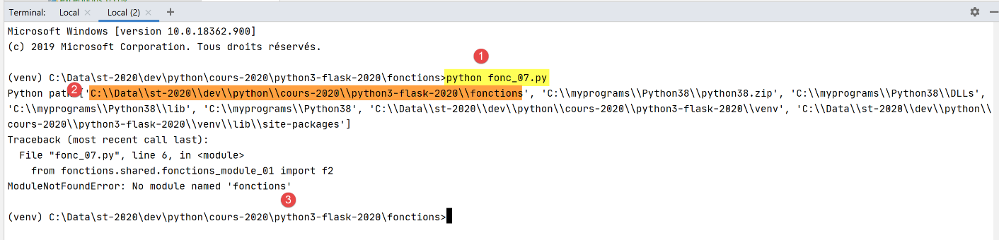
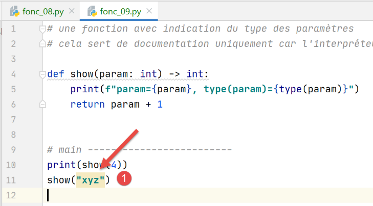

6. Les fonctions

6.1. Script [fonc_01] : portée des variables
Le script [fonc_01] montre des exemples de portée de variables entre fonctions :
Résultats
Notes :
- le script montre l'utilisation de la variable i, déclarée globale dans les fonctions f1 et f2. Dans ce cas, le programme principal et les fonctions f1 et f2 partagent la même variable i.
6.2. Script [fonc_02] : portée des variables
Le script [fonc_03] reprend le script [fonc_02] et montre comment éviter l'usage de variables globales :
Commentaires :
- lignes 2, 12 : au lieu d'être déclarée globale, la variable [i] est passée en paramètre aux fonctions f1 et f2 ;
- lignes 9, 19 : les fonctions f1 et f2 rendent la variable [i] modifiée au programme principal. Celui-ci la récupère aux lignes 36 et 37 ; Résultats
6.3. Script [fonc_03] : portée des variables
Le script [fonc_03] montre une particularité des variables utilisées à la fois dans une fonction et dans le code appelant celle-ci, selon que dans la fonction cette variable est utilisée uniquement en lecture ou non.
Notes
- ligne 34 : le code principal définit une variable [i] ;
- lignes 1-5 : la fonction f1 utilise également une variable [i] sans lui donner de valeur. C'est une lecture de la variable [i]. Dans ce cas, la variable [i] utilisée est celle du code appelant, ligne 34 ;
- lignes 8-18 : la fonction f2 utilise également une variable [i] mais lui donne une valeur ligne 16. Le fait de donner une valeur à la variable [i] dans f2 fait automatiquement de [i] une variable locale à la fonction [f2]. Celle-ci 'cache' donc la variable [i] du code appelant ;
- ligne 14 : l'opération d'écriture de la variable locale [i] va échouer car celle-ci n'a pas de valeur lorsqu'on arrive à la ligne 14. Elle obtient sa valeur ligne 16. Il va se produire une exception. Pour cette raison, on a inséré la ligne 14 dans un try / catch ;
- lignes 21-29 : la fonction f3 fait la même chose que la fonction f2 mais définit plus tôt sa variable locale [i] ; Résultats
6.4. Script [fonc_04] : mode de passage des paramètres
Le script est le suivant :
Résultats
Notes :
- tout est objet en Python. Certains objets sont dits "immutable" (en anglais) : on ne peut pas les modifier. C'est le cas des nombres, des chaînes de caractères, des tuples. Lorsque des objets Python sont passés en paramètres à des fonctions, ce sont leur références qui sont passées sauf si ces objets sont "immutable" auquel cas, c'est la valeur de l'objet qui est passée ;
- les fonctions f1 (ligne 2), et f2 (ligne 7) veulent illustrer le passage d'un paramètre de sortie. On veut que le paramètre effectif d'une fonction soit modifié par la fonction ;
- lignes 2-3 : la fonction f1 modifie son paramètre formel a. On veut savoir si le paramètre effectif va lui aussi être modifié ;
- lignes 14-15 : le paramètre effectif est x=1. La ligne 2 des résultats, montre que le paramètre effectif n'est pas modifié. Ainsi le paramètre effectif x et le paramètre formel a sont deux objets différents ;
- lignes 8-10 : la fonction f2 modifie ses paramètres formels a et b, et les rend comme résultats ;
- lignes 17-18 : on passe à f2 les paramètres effectifs (x,y) et le résultat de f2 est remis dans (x,y). La ligne 3 des résultats montre que les paramètres effectifs (x,y) ont été modifiés. On en conclut que lorsqu'on des objets "immutable" sont des paramètres de sortie, il faut qu'ils fassent partie des résultats renvoyés par la fonction.
6.5. Script [fonc_05] : ordre d'écriture des fonctions dans un script
Le script [fonc_05] montre qu'on ne peut appeler une fonction si elle n'a pas été précédemment rencontrée dans le code :
Notes
- la ligne 2 va provoquer une erreur parce qu'elle utilise la fonction f2 qui n'a pas encore été définie dans le script ; Résultats
6.6. Script [fonc_06] : ordre d'écriture des fonctions dans un script
Le script [fonc_06] montre que ce qui vaut pour le code appelant ne vaut pas pour les fonctions :
Notes
- ligne 3 : la fonction [f2] utilise la fonction [f1] définie plus loin dans le script. Cela ne provoque cependant pas d'erreur. On peut donc en conclure que l'ordre de définition des fonctions dans un script Python n'a pas d'importance ; Résultats
6.7. Script [fonc_07] : utilisation de modules
Le script [fonc_07] montre comment isoler les fonctions dans un module.

Nous isolons dans un module des fonctions réutilisables. Plutôt que de les transporter d'un script à l'autre :
- on les place dans un fichier à part que l'on déclare d'une façon particulière ;
- les scripts ayant besoin de ces fonctions 'importe' le module qui les contient ; Le script [fonctions_module_01] est le suivant :
Pour que les fonctions du script [fonctions_module_01] puissent être référencées par d'autres scripts, il y a différentes façons de faire. Elles diffèrent selon qu'on exécute ou non le script à l'intérieur de [PyCharm].
Sous [PyCharm] les modules importés sont cherchés dans des dossiers précis appelés [Sources Root]. Il y a deux façons de faire d'un dossier un [Sources Root] :

- en [4], le dossier a changé de couleur ; Après cette opération, le dossier [fonctions/modules] est reconnu comme un dossier source. On peut alors écrire dans un script :
Pour importer / utiliser la fonction f2 définie dans le module [fonctions_module_01.py].
Une autre méthode est de passer par les propriétés du projet :

- ci-dessus, la séquence [1-6] permet de faire du dossier [shared] un dossier où ranger des modules à importer ; Nous n'allons pour l’instant déclarer aucun dossier comme [Sources Root] à part la racine du projet :

Ceci fait, on peut écrire le script [fonc-07] suivant :
- ligne 2 : on importe l'objet [sys] pour pouvoir utiliser ligne 5, son attribut [path] qui donne, ce qu'on appelle le [Python Path] : une liste de dossiers qui seront explorés à la recherche de modules importés ;
- ligne 6 : on importe la fonction f2 du module [fonctions_module_01]. Pour désigner ce module, on utilise le chemin qui mène de la racine du projet au module. Avec Pycharm, la racine du projet fait toujours partie des dossiers explorés lorsqu'est cherché un module importé dans un script. Ce dossier fait donc partie du [Python Path] du projet. C'est ce que la ligne 5 va nous permettre de vérifier ;
- ligne 6 : si on décrivait le chemin qui mène de la racine du projet au dossier [fonctions_module_01] on écrirait [fonctions/shared/fonctions_module_01]. Dans le chemin d'un module, le signe / est remplacé par le point. On écrit donc [fonctions.modules.fonctions_module_01] ;
- après la ligne 6, la fonction f2 est connue. On l'utilise ligne 8 ; Résultats
Ci-dessus :
- surlignée en vert, on voit que la racine du projet fait partie du [Python Path] ;
- surligné en jaune, on voit que le dossier du script exécuté fait également partie du [Python Path] ;
- les autres éléments du [Python Path] proviennent directement du dossier d'installation de Python ; Que se passe-t-il lorsqu'on n'utilise pas PyCharm pour exécuter [fonc-07] ?


- en [1], on exécute le script [fonc-07]. On est positionnés dans le dossier [fonctions] ;
- en [2], on voit que le dossier d'exécution fait partie du [Python Path]. C'est toujours ainsi. On peut voir également que le dossier racine [C:\Data\st-2020\dev\python\cours-2020\python3-flask-2020] ne fait pas partie du [Python Path] ;
- en [3], l'interpréteur Python déclare qu'il ne trouve pas le module [fonctions] ; Pour chercher le module importé [fonctions.shared.fonctions_module_01], l'interpréteur Python cherche dans les dossiers du [Python Path] un sous-dossier nommé [fonctions]. Il ne le trouve nulle part. En effet le sous-dossier [fonctions] est sous le dossier [C:\Data\st-2020\dev\python\cours-2020\python3-flask-2020] qui ne fait pas partie du [Python Path].
Le script [fonc-08] donne une solution possible à ce problème.
6.8. Script [fonc_08] : ajouter des dossiers au [Python Path]
Il est possible de modifier le [Python Path] par programmation comme le montre le script [fonc-08] :
Notes
- ligne 4 : la variable spéciale [file] est le nom du script qui s’exécute. Selon le contexte d’exécution, ce nom peut être absolu (Pycharm) ou relatif (console). La fonction [os.path.abspath] donne le nom absolu du fichier dont on lui passe le nom. La fonction [os.path.dirname] donne le nom absolu du dossier contenant le fichier dont on lui passe le nom ;
- ligne 10 : [sys.path] est un tableau contenant les noms des dossiers à explorer lorsqu'un module est recherché. On ajoute à ce tableau la racine du projet définie ligne 4 ;
- on affiche le [Python Path] avant (ligne 8) et après (ligne 12) modification ;
- ligne 15 : on importe le module [fonctions_module_01] qui contient la fonction f2 ; L'exécution dans PyCharm donne les résultats suivants :
- ligne 3 : on voit que le dossier [shared] est présent deux fois dans le [Python Path]. On peut éviter cela mais ici ça ne gêne pas ;
- ligne 4 : la fonction f2 a bien été exécutée ; Maintenant exécutons [fonc-08] dans un terminal :
- ligne 2 : comme précédemment, le dossier [shared] n'est pas dans le [Python Path] ;
- ligne 3 : maintenant il y est ;
- ligne 4 : la fonction f2 a été trouvée ;
6.9. Script [fonc_09] : déclaration du type des paramètres
Le script [fonc_09] montre qu'on peut déclarer le type des paramètres d'une fonction ainsi que celui du résultat. Cependant cette déclaration n'est utile que pour la documentation de la fonction. L'interpréteur Python ne vérifie pas que les paramètres effectifs de la fonction ont bien le type attendu. Cependant, Pycharm signale les incohérences de types entre paramètres effectifs et formels. Cette seule raison suffit pour rendre les déclarations de type indispensables.
Le script est le suivant :
Notes :
- ligne 5 : on déclare que le paramètre formel [param] est de type [int] et que le résultat de la fonction est également de type [int] ;
- ligne 11 : le paramètre effectif de la fonction [show] a le bon type ;
- ligne 12 : le paramètre effectif de la fonction [show] n'a pas le bon type ; Résultats
- ligne 10 : le type du paramètre [param] est de type [str]. Lorsque ce message s'affiche, on est déjà entrés dans le code de la fonction [show]. L'interpréteur Python a donc accepté que le paramètre effectif da la fonction [show] soit de type [str] ;
- la ligne 7 du code provoque l'exception reflétée par les lignes 4-10 des résultats ; PyCharm indique néanmoins qu’il y a une anomalie :

En [1], PyCharm a surligné l’appel erroné.
6.10. Script [fonc_10] : paramètres nommés
Pour passer des paramètres à une fonction, on peut utiliser les noms des paramètres formels de celle-ci. Dans ce cas, on n'est pas obligés de respecter l'ordre des paramètres formels :
Notes
- ligne 2 : la fonction f a deux paramètres formels x et y ;
- ligne 7 : lors de l'appel à la fonction f, on peut utiliser les noms des paramètres formels. Cette pratique peut être utile au moins dans deux cas :
- la fonction a beaucoup de paramètres dont la plupart ont une valeur par défaut. Lors de l'appel, la technique précédente permet d'initialiser les seuls paramètres dont on ne veut pas utiliser la valeur par défaut ;
- si les paramètres formels ont un nom significatif, alors l'utilisation de paramètres nommés dans l'appel de la fonction améliore la lisibilité du code ; Résultats
6.11. Script [fonc_11] : fonction récursive
Le script [fonc_11] est un exemple de fonction récursive (qui s’appelle elle-même) :
Commentaires
- lignes 1-9 : la fonction factorielle ;
- ligne 9 : la fonction [factorielle] s’appelle elle-même ;
- lignes 5-6 : une fonction récursive doit toujours s’arrêter lorsqu’une condition est réalisée sinon on a une récursion infinie ; Résultats
6.12. Script [fonc_12] : fonction récursive
La fonction [fonc_12] donne davantage de détails sur le fonctionnement de la récursivité :
Commentaires
- ligne 5 : on s’intéresse toujours à la fonction factorielle. On lui ajoute le paramètre [j] ;
- ligne 12 : la variable j est régulièrement incrémentée à chaque factorielle. On affiche sa valeur avant (ligne 12) et après (ligne 16) la récursivité (ligne 15) ; Résultats
- lignes 2-8 : on voit que la valeur de [j] croît tant que la récursivité continue jusqu’à rencontrer la condition où la récursivité s’arrête. A partir de ce moment, le retour des appels à la fonction [fact] s’opère en sens inverse des appels ;
- lignes 10-16 : ces affichages traduisent les retours successifs de l’appel de la factorielle. La variable [j] retrouve ses valeurs jusqu’à sa valeur initiale 1 ;